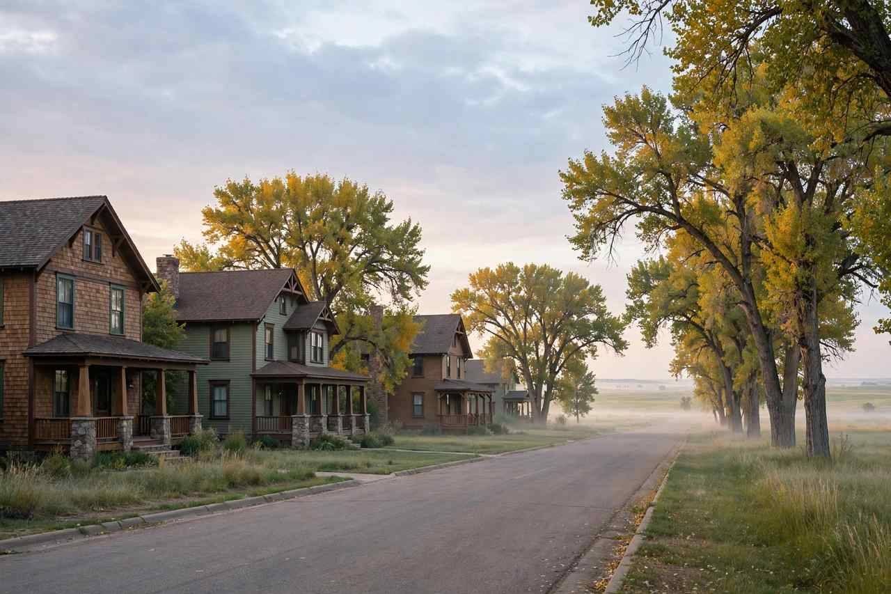

Rodent Control · Garretson, SD
Fast Rodent Control in Garretson, SD
Rats in the attic or mice in the kitchen in Garretson? Murvo provides same-day rodent control with local crews who inspect first, remove the animals already inside, and seal the entry points they used. Every job is quoted flat-rate in writing before work begins and backed by a written guarantee, covering homes and businesses across Minnehaha County. Crews route daily across Minnehaha County - 1 ZIP codes covered, including 57030.
24/7Availability
1ZIP codes covered
Same-dayResponse
Licensed · Upfront options · Written guarantees · Fully insured
Garretson at a glance
Local Rodent Control for Garretson, SD.
Minnehaha County
Countyeastern South Dakota
RegionSioux Falls · 17 mi
Nearest metro196 miles east of Pierre
From Pierre1
ZIP codes covered Service by service in Garretson
Rodent Control Services Available in Garretson
Rodent-only specialists serving Garretson and Minnehaha County. Every service below is explained in local terms - the species involved, the entry points that matter in vintage duplexes and stone homes, brick bungalows, older single-family homes, and farm and rural properties, and the seasonal timing that decides whether a fix lasts.
- 01Rodent Control↗
- 02Rodent Inspection↗
- 03Rodent Removal↗
- 04Rodent Exclusion↗
- 05Rodent Proofing↗
- 06Rat Control↗
- 07Mice Control↗
- 08Mouse Removal↗
- 09Rat Removal↗
- 10Rodent Trapping↗
- 11Rodent Baiting↗
- 12Rodenticide Application↗
- 13Attic Rodent Removal↗
- 14Crawl Space Rodent Removal↗
- 15Wall Rodent Removal↗
- 16Kitchen Rodent Control↗
- 17Garage Rodent Control↗
- 18Commercial Rodent Control↗
- 19Residential Rodent Control↗
- 20Emergency Rodent Removal↗
- 21Same-Day Rodent Control↗
- 22Rodent Damage Repair↗
- 23Rodent Waste Cleanup↗
- 24Rodent Disinfection↗
- 25Rodent Odor Removal↗
- 26Dead Rodent Removal↗
- 27Rodent Dropping Cleanup↗
- 28Rodent Exclusion for Roofs↗
- 29Rodent Exclusion for Vents↗
- 30Rodent Exclusion for Chimneys↗
Rodent Control in Garretson
Rodent Control in Garretson
Most Garretson calls start with a sound nobody can place, then droppings confirm what the noise suggested. Murvo treats rodent control as a sequence, not a single visit: find the species, clear what is inside, close what let it in. Before any work begins, you approve a flat-rate written quote.
In Garretson, rodent control is not a generic spray-and-go service. Rodents exploit basement foundations, alley-facing garage doors, sewer laterals, and gaps around utility lines and sills in vintage duplexes and stone homes, brick bungalows, older single-family homes, and farm and rural properties, and a fix that ignores those routes does not last. Murvo's Garretson team inspects first, shows you the evidence - droppings, gnaw marks, entry gaps - and then lays out the work with a flat-rate written quote. We serve all of Minnehaha County from Garretson, including Sherman, Brandon, and every job is covered by our written workmanship guarantee. Around Dell Rapids, Pine Lakes Addition, Sherman, the pattern is similar: House mouse (Mus musculus) finds basement foundations, alley-facing garage doors, sewer laterals, and gaps around utility lines and sills first, and lasting rodent control has to close those routes.
We start by identifying whether Norway rat (Rattus norvegicus), House mouse (Mus musculus), or both are active, because each species nests, feeds, and travels differently. Once numbers fall, exclusion sealing closes the route back in, droppings and nesting debris are removed hygienically, and follow-up monitoring checks the attic, crawl space, and kitchen until readings stay clear. Nothing is sealed while animals remain inside. Traps are placed on proven runways along walls, beams, and pipe runs, checked on schedule, and adjusted as catches change. That order protects your home.
Getting started takes one conversation, day or night, because our lines stay open 24/7. Work proceeds only after your approval, in stages you can follow, and a final walkthrough reviews every seal and every monitoring result before sign-off. We book a window that suits your household, confirm access needs in advance, and arrive prepared. Questions after sign-off are welcome at any hour, and the same written record helps any technician pick up your case immediately.
Need help quickly in Garretson? Call any time — the emergency line is staffed 24/7, and same-day rodent control appointments are available in most areas. We inspect first, explain the plan in plain language, and put the flat rate in writing before work starts. That is also why Murvo pairs removal with exclusion in Garretson - treating the animal without closing basement foundations, alley-facing garage doors, sewer laterals, and gaps around utility lines and sills rarely lasts.
Murvo does not quote rodent control sight unseen, because species, activity, and sealing needs change the work involved. After inspection you get one flat-rate written quote, and that is the figure you pay. As national context only, Angi's 2026 figures put rat and mouse removal and control at an average of $396, with a typical range of $189 to $655 — a benchmark, not a Murvo price.
Rodent Inspection in Garretson
Rodent Inspection in Garretson
Most Garretson inspections start with uncertainty: a noise, a smell, a few droppings that might be old. Murvo turns that uncertainty into a written record. A rodent inspection checks attic, crawl space, roofline, and foundation, photographs the evidence, and ends with a flat-rate written quote for anything worth fixing.
Homeowners in Garretson call Murvo for rodent inspection because the problem here is specific: Norway rat (Rattus norvegicus) pressure around vintage duplexes and stone homes, brick bungalows, older single-family homes, and farm and rural properties, tight access at basement foundations, alley-facing garage doors, sewer laterals, and gaps around utility lines and sills, and activity that follows the local season. Our Minnehaha County crews diagnose the real source before recommending work, explain the options in plain language, and quote one flat rate in writing. Across Garretson - including Sherman, Brandon - every visit is backed by licensed, insured technicians and our written workmanship guarantee. Around Dell Rapids, Pine Lakes Addition, Sherman, the pattern is similar: House mouse (Mus musculus) finds basement foundations, alley-facing garage doors, sewer laterals, and gaps around utility lines and sills first, and lasting rodent inspection has to close those routes.
Think of the inspection as three passes. The exterior pass checks siding, vents, pipe entries, and roof junctions for gaps and rub marks. The interior pass covers attic insulation, crawl-space corners, and kitchen voids for droppings, nests, and gnawing. The review pass brings it together: species, likely numbers, contamination, and the order in which fixes should happen. Each pass is photographed, and nothing is recommended without evidence from one of those passes to support it. The report separates what rodents are doing now from what the structure merely allows them to do later.
Booking a rodent inspection in Garretson takes one call, and same-day appointments are often available. Your technician arrives on time, walks the property with you, and inspects the attic, crawl space, and exterior in one visit. Findings are explained with photos before you receive a flat-rate written quote for any recommended work. Nothing proceeds without your approval, and urgent items are clearly flagged. You keep the full written report either way.
You do not have to wait days for answers in Garretson. Same-day rodent inspection appointments are available in most areas, urgent calls are taken 24/7, and most home inspections take under an hour. You finish the visit with photos, written findings, and flat-rate pricing for anything we recommend. Murvo's Garretson crews explain the finding either way, and the flat-rate quote leaves the decision with you.
Nationally, a professional rodent inspection typically runs $100 to $200 according to Angi's 2026 data, and it is often credited toward the job if you proceed. Murvo confirms your exact rodent inspection price before the visit and quotes any follow-up work as a flat rate in writing after inspection, so the figure you approve is the figure you pay, with no hourly billing.
Rodent Removal in Garretson
Rodent Removal in Garretson
Removal works best when it is species-specific. In Garretson, vintage duplexes and stone homes, brick bungalows, older single-family homes, and farm and rural properties give Norway rat (Rattus norvegicus) and House mouse (Mus musculus) warm voids, stored food, and quiet nesting corners reached through basement foundations, alley-facing garage doors, sewer laterals, and gaps around utility lines and sills. Our licensed, insured technicians assess numbers and access routes first, then set traps on proven runways and return on schedule until catches fall to zero and monitoring stays clear.
In Garretson, rodent removal is not a generic spray-and-go service. Rodents exploit basement foundations, alley-facing garage doors, sewer laterals, and gaps around utility lines and sills in vintage duplexes and stone homes, brick bungalows, older single-family homes, and farm and rural properties, and a fix that ignores those routes does not last. Murvo's Garretson team inspects first, shows you the evidence - droppings, gnaw marks, entry gaps - and then lays out the work with a flat-rate written quote. We serve all of Minnehaha County from Garretson, including Sherman, Brandon, and every job is covered by our written workmanship guarantee. Seasonal timing matters for rodent removal in Garretson: rodents surge in Garretson from October through April.
Removal here is measured in records, not impressions. Sealing recommendations follow immediately, because a clear home with open gaps will not stay clear for long in Garretson. Each trap is numbered, mapped, and checked on schedule, and every catch is logged against its location. That log shows where activity concentrates, where it is fading, and where a placement needs to move. When the log stays empty across repeat checks, removal is genuinely finished. That record also protects you, because it shows exactly when activity ended rather than when visits simply stopped.
Once you book rodent removal in Garretson, we agree a time window and your technician arrives with traps, protective equipment, and a clear plan. Progress is photographed and shared with you throughout the program. The first visit confirms activity and sets traps; return visits clear and reset them on schedule. When catches reach zero, we walk through the results, discuss sealing, and confirm your written guarantee before closing the job. Nothing is left unexplained.
When rodents are active indoors in Garretson, waiting rarely helps. Rodent removal can usually start the same day you call, our line answers 24/7 for a rodent loose in a living area, and the first visit sets traps straight away. Scheduled returns then clear and reset them until monitoring shows the home is clear. Murvo's Garretson crews explain the finding either way, and the flat-rate quote leaves the decision with you.
How many animals are active, which species they are, and how much sealing follows removal all shape the price, so we assess first and then quote one flat rate in writing. Angi's 2026 national context — an average of $396 and a typical $189 to $655 range for rat and mouse removal — is provided for comparison only; your written quote is the exact Murvo figure.
Rodent Exclusion in Garretson
Rodent Exclusion in Garretson
Most Garretson exclusion jobs start with a simple question: where exactly are they getting in? Murvo answers it opening by opening, then seals each one with material matched to its size and location. You see the full list, and one flat-rate written quote, before a single gap gets closed.
When you need rodent exclusion in Garretson, the job starts with what is actually happening in your part of Minnehaha County. Murvo crews work Garretson every week, so they know how Norway rat (Rattus norvegicus) and House mouse (Mus musculus) behave around vintage duplexes and stone homes, brick bungalows, older single-family homes, and farm and rural properties here - and where they get in: basement foundations, alley-facing garage doors, sewer laterals, and gaps around utility lines and sills. We arrive equipped for the full job, confirm the flat rate in writing before work begins, and cover the whole Garretson area, including Sherman, Brandon. No call-center runaround and no open-ended hourly billing - just a local crew, a clear plan, and a written quote you approve first. Around Dell Rapids, Pine Lakes Addition, Sherman, the pattern is similar: House mouse (Mus musculus) finds basement foundations, alley-facing garage doors, sewer laterals, and gaps around utility lines and sills first, and lasting rodent exclusion has to close those routes.
Before any sealing, active rodents are cleared with trapping so nothing is trapped inside the structure. We then work opening by opening around basement foundations, alley-facing garage doors, sewer laterals, and gaps around utility lines and sills, rooflines, and utility penetrations, photographing each finished seal. Because exclusion removes the route in rather than relying on chemicals, it reduces the need for rodenticides and supports pet-safe, no-poison control. A final walkthrough shows you every protected opening, and monitoring checks confirm no new activity appears at sealed points. Every seal is listed on your written guarantee.
Book the survey, and we will work around your schedule, including urgent openings near wiring or food storage. Your technician lists every gap found, explains which are active, and quotes the sealing as one written figure. Approved work is completed opening by opening, photographed as it progresses, and reviewed with you before the visit ends. The finished inventory lists every material used at every opening, which makes later inspections faster and keeps the guarantee easy to enforce.
The first step is a survey, and in Garretson we can often schedule that survey the same day you call about rodent exclusion. Sealing follows once active animals are cleared — nothing is ever sealed inside — and most homes are fully sealed within days, with entry points near wiring or food areas handled first. That is also why Murvo pairs removal with exclusion in Garretson - treating the animal without closing basement foundations, alley-facing garage doors, sewer laterals, and gaps around utility lines and sills rarely lasts.
After the survey of your Garretson home, every opening that needs sealing is listed and priced as one flat-rate written quote, so you pay only for the work your property needs. For national context, Angi's 2026 data puts basic exclusion at $200 to $600 depending on access and the number of openings; that benchmark is not a Murvo price.
Rodent Proofing in Garretson
Rodent Proofing in Garretson
The best rodent problem is the one that never starts. Rodent proofing in Garretson hardens your home before Norway rat (Rattus norvegicus) and House mouse (Mus musculus) move in: sealing gaps, screening vents, fitting door sweeps, and removing the food and shelter that attract them. Murvo surveys the whole property, prioritizes the work, and gives one flat-rate written quote for the work.
When you need rodent proofing in Garretson, the job starts with what is actually happening in your part of Minnehaha County. Murvo crews work Garretson every week, so they know how Norway rat (Rattus norvegicus) and House mouse (Mus musculus) behave around vintage duplexes and stone homes, brick bungalows, older single-family homes, and farm and rural properties here - and where they get in: basement foundations, alley-facing garage doors, sewer laterals, and gaps around utility lines and sills. We arrive equipped for the full job, confirm the flat rate in writing before work begins, and cover the whole Garretson area, including Sherman, Brandon. No call-center runaround and no open-ended hourly billing - just a local crew, a clear plan, and a written quote you approve first. Around Dell Rapids, Pine Lakes Addition, Sherman, the pattern is similar: House mouse (Mus musculus) finds basement foundations, alley-facing garage doors, sewer laterals, and gaps around utility lines and sills first, and lasting rodent proofing has to close those routes.
Materials follow the same standard as full exclusion work: copper mesh packed into irregular gaps, hardware cloth over openings that need airflow, flashing at vulnerable junctions, and sealants matched to smaller cracks. Around kitchens, pipe runs and the voids behind units receive particular attention, because warmth and food meet there. The written plan photographs each weakness, states who handles it, and schedules a seasonal re-check, since new gaps appear as a building ages and proofing works best as maintenance. Seasonal timing is noted in the plan as well.
Arrange a survey at a time that suits you; there is no emergency, so scheduling stays relaxed. Your technician walks every side of the property with you, photographs weak points, and talks through the plan in plain language. You then receive a written quote separating essential work from optional improvements, and nothing proceeds without your say-so. Staging the work is fine; essential sealing can proceed first while optional improvements wait until a season or budget that suits you better.
Proofing is planned work rather than an emergency, but you can still move fast: rodent proofing surveys in Garretson are often available the same day and always within a few days. Once you approve the plan, most work is finished in a single visit, ideally before colder weather drives rodents indoors. Murvo's Garretson crews explain the finding either way, and the flat-rate quote leaves the decision with you.
For national context, Angi's 2026 data puts exclusion, the core of proofing, at $200 to $600 for basic work. That figure is a benchmark, not a Murvo price. After surveying your Garretson property, we separate quick homeowner wins from specialist sealing and quote the professional work as one flat rate in writing, so you can stage spending sensibly.
Rat Control in Garretson
Rat Control in Garretson
Rats are cautious, strong, and destructive, and a Garretson sighting usually means a settled group is already traveling your fences, pipes, and rooflines nightly. Murvo's rat control identifies the species, maps those routes, and combines pre-baited trapping with removal and exclusion. You approve one flat-rate written quote before work starts, and monitoring continues until activity fully stops.
In Garretson, rat control is not a generic spray-and-go service. Rodents exploit basement foundations, alley-facing garage doors, sewer laterals, and gaps around utility lines and sills in vintage duplexes and stone homes, brick bungalows, older single-family homes, and farm and rural properties, and a fix that ignores those routes does not last. Murvo's Garretson team inspects first, shows you the evidence - droppings, gnaw marks, entry gaps - and then lays out the work with a flat-rate written quote. We serve all of Minnehaha County from Garretson, including Sherman, Brandon, and every job is covered by our written workmanship guarantee. Around Dell Rapids, Pine Lakes Addition, Sherman, the pattern is similar: House mouse (Mus musculus) finds basement foundations, alley-facing garage doors, sewer laterals, and gaps around utility lines and sills first, and lasting rat control has to close those routes.
Wary rats punish rushed trapping, so the program begins with patience. Catches are recorded by location, giving a clear picture of colony size and movement. Exclusion follows at rooflines and entry points, and monitoring devices remain in place afterwards to verify that quiet routes have genuinely stayed quiet. Unset traps are placed on confirmed runways and pre-baited until feeding becomes confident and regular. Only then are traps set, checked frequently, and repositioned as the pattern shifts. Counts matter here, because a falling catch trend tells a different story from a single lucky night.
Between visits, keep pet food secured and avoid moving any traps, even slightly, since position matters. The program closes only when monitoring confirms activity has ended and exclusion is finished, with your guarantee confirmed in writing at sign-off. Your background-checked technician returns on schedule, removes trapped rats promptly, adjusts placements, and reports counts plainly. Keep gates and access points available on scheduled days where possible, since uninterrupted checks keep the program on its planned timetable.
Rats do not wait, and neither do we: rat control in Garretson can usually start with a same-day inspection, and urgent calls are answered 24/7. Pre-baiting begins on the first visit once you approve the written quote, traps are set as soon as rats are feeding confidently, and scheduled checks keep the program moving until activity stops. If you are seeing signs now, an inspection this week is the fastest way to know which situation you are in.
Species, colony size, and the number of entry points to seal all affect rat work, which is why Murvo inspects first and quotes one flat rate in writing. Angi's 2026 figures, given for national context only, average rat control and removal at $396 and typically run $189 to $655; the written quote for your Garretson home is the exact price.
Mice Control in Garretson
Mice Control in Garretson
Most Garretson mouse problems announce themselves in the kitchen first: droppings in a drawer, a chewed corner on stored food, movement behind the kickboard. Murvo surveys those hotspots, clusters traps where mice actually travel, seals gaps, and covers the program with one flat-rate written quote approved in advance.
When you need mice control in Garretson, the job starts with what is actually happening in your part of Minnehaha County. Murvo crews work Garretson every week, so they know how Norway rat (Rattus norvegicus) and House mouse (Mus musculus) behave around vintage duplexes and stone homes, brick bungalows, older single-family homes, and farm and rural properties here - and where they get in: basement foundations, alley-facing garage doors, sewer laterals, and gaps around utility lines and sills. We arrive equipped for the full job, confirm the flat rate in writing before work begins, and cover the whole Garretson area, including Sherman, Brandon. No call-center runaround and no open-ended hourly billing - just a local crew, a clear plan, and a written quote you approve first. Around Dell Rapids, Pine Lakes Addition, Sherman, the pattern is similar: House mouse (Mus musculus) finds basement foundations, alley-facing garage doors, sewer laterals, and gaps around utility lines and sills first, and lasting mice control has to close those routes.
The program starts with an activity and entry-point survey covering kitchens, attics, wall voids, and under-floor spaces. Traps are placed in clusters along baseboards, behind appliances, and in attic voids, because mice travel the same short routes nightly. Technicians return to clear and reset traps and track numbers until they reach zero. We then seal pencil-width gaps, including the overlooked routes behind baseboards and where pipes and wires pass through floors, and advise on cleaning scent-marked surfaces. Follow-up monitoring confirms the result before sign-off.
After booking, we confirm your time window and any rooms where you have seen droppings or heard scratching. On arrival, your background-checked technician inspects, sets clustered traps at proven hotspots, and talks you through pet and child safety around placements. Return visits clear and reset traps, then sealing is completed and the written guarantee confirmed at the final check. You approve the plan and price before trapping starts. No surprises are added later.
Mice multiply fast, so mice control in Garretson is built to start fast too: a survey can often be arranged the same day you call, with traps set on that first visit once the quote is approved. Because mice investigate new objects quickly, catches usually begin soon after, and check visits follow until a final confirmation shows activity has stopped. Around Garretson, vintage duplexes and stone homes, brick bungalows, older single-family homes, and farm and rural properties give rodents the most cover, which is why entry points get checked before traps are set.
The number of rooms affected and the amount of sealing required set the price, so Murvo surveys first and quotes one flat rate in writing. For national context only, Angi's 2026 data averages rat and mouse control and removal at $396, typically $189 to $655 — not a Murvo price; your written quote is exact.
Mouse Removal in Garretson
Mouse Removal in Garretson
You found droppings in a cabinet or heard scratching in the attic of your Garretson home, and you want the mice out, not managed indefinitely. Murvo's mouse removal locates nests and feeding areas room by room, runs a multi-trap program until catches reach zero, and seals access points behind it. One flat-rate written quote is agreed before work begins.
When you need mouse removal in Garretson, the job starts with what is actually happening in your part of Minnehaha County. Murvo crews work Garretson every week, so they know how Norway rat (Rattus norvegicus) and House mouse (Mus musculus) behave around vintage duplexes and stone homes, brick bungalows, older single-family homes, and farm and rural properties here - and where they get in: basement foundations, alley-facing garage doors, sewer laterals, and gaps around utility lines and sills. We arrive equipped for the full job, confirm the flat rate in writing before work begins, and cover the whole Garretson area, including Sherman, Brandon. No call-center runaround and no open-ended hourly billing - just a local crew, a clear plan, and a written quote you approve first. Seasonal timing matters for mouse removal in Garretson: rodents surge in Garretson from October through April.
We favor trap-based, no-poison removal, which is safer around children and pets and avoids mice dying in hidden voids. Cleanup follows CDC guidance: droppings and nesting debris are never dry-swept, because that can spread contamination; surfaces are disinfected first, then waste is removed hygienically. We also advise on safe cleaning of cabinets and storage areas afterwards, so your kitchen feels properly yours again once the program is complete and monitoring confirms zero activity. Sealing then closes the route permanently. That finish is guaranteed in writing.
As catches fall, the focus shifts in order: final clearing, disinfection of affected areas, then sealing of access points. Your technician reviews the catch record with you at sign-off, confirms which rooms are fully safe to use, and leaves prevention advice plus guarantee paperwork. Seasonal proofing can be arranged if your property has repeated fall problems. If signs reappear during monitoring, placements are restored under the same agreed program rather than starting a new conversation from scratch.
In Garretson, mouse removal can often begin the same day you call, especially where mice are active in kitchens or living areas. The first visit surveys nesting sites and sets traps immediately after you approve the quote; because mice investigate traps quickly, catches usually start fast, and return visits continue until numbers reach zero. In Minnehaha County, most cases involve the Norway rat (Rattus norvegicus) and the House mouse (Mus musculus), so the inspection focuses on their routes first.
Mouse removal cost reflects the number of rooms involved and how much sealing is needed, which is why Murvo surveys first and quotes a flat rate in writing. For national context only, Angi's 2026 data averages rat and mouse removal at $396, typically $189 to $655. That benchmark is not a Murvo price; your written quote covers your exact program.
Rat Removal in Garretson
Rat Removal in Garretson
In vintage duplexes and stone homes, brick bungalows, older single-family homes, and farm and rural properties, where rats enter decides how removal unfolds. Roof-level access through basement foundations, alley-facing garage doors, sewer laterals, and gaps around utility lines and sills points toward attic work; ground burrows suggest basements and drains across Minnehaha County. Our licensed technicians trace the whole route for Norway rat (Rattus norvegicus) and House mouse (Mus musculus), remove the colony, and sanitize areas where nests contaminated insulation or stored items.
Homeowners in Garretson call Murvo for rat removal because the problem here is specific: Norway rat (Rattus norvegicus) pressure around vintage duplexes and stone homes, brick bungalows, older single-family homes, and farm and rural properties, tight access at basement foundations, alley-facing garage doors, sewer laterals, and gaps around utility lines and sills, and activity that follows the local season. Our Minnehaha County crews diagnose the real source before recommending work, explain the options in plain language, and quote one flat rate in writing. Across Garretson - including Sherman, Brandon - every visit is backed by licensed, insured technicians and our written workmanship guarantee. Around Dell Rapids, Pine Lakes Addition, Sherman, the pattern is similar: House mouse (Mus musculus) finds basement foundations, alley-facing garage doors, sewer laterals, and gaps around utility lines and sills first, and lasting rat removal has to close those routes.
Removal begins by establishing species and the scale of the problem, because a single transient rat and an attic colony need very different programs. Attic colonies may need dedicated attic work, while a carcass in a void calls for retrieval and odor treatment. Sealing follows once the property is clear. Technicians pre-bait unset traps on confirmed runways so cautious rats feed without fear, then set them, returning frequently to remove animals hygienically and adjust placements as activity shifts. Nothing is rushed at this stage.
Book and we will agree a visit time, with same-day appointments for active infestations where available. Your technician assesses the colony, explains each stage, and confirms the written quote before pre-baiting begins. Repeat visits are scheduled in advance, progress is reported after each one, and sealing follows once catches stop and monitoring stays clear. Every visit is documented with counts and locations, so the final clearance rests on a complete record rather than a single quiet check.
Rats in a living area cannot wait for a routine slot. In Garretson, rat removal can usually start the same day you call and our line answers 24/7 for urgent cases. Pre-baiting starts on the first visit after you approve the written quote, traps are set once rats feed confidently — typically within days — and frequent returns run until monitoring confirms the colony is gone. In Minnehaha County, most cases involve the Norway rat (Rattus norvegicus) and the House mouse (Mus musculus), so the inspection focuses on their routes first.
Colony size, access, and the sealing needed afterwards drive the price, so Murvo assesses the property first and quotes a flat rate in writing covering the full program. Angi's 2026 data, for national context only, averages rat removal at $396 and typically ranges from $189 to $655; that is a benchmark, not a Murvo price.
Rodent Trapping in Garretson
Rodent Trapping in Garretson
Most Garretson trapping programs succeed or fail on placement, not equipment. Murvo maps runways from droppings and rub marks first, then positions traps perpendicular to walls and along beams and pipes where rodents genuinely travel. You approve one flat-rate written quote covering the program and its check visits.
Homeowners in Garretson call Murvo for rodent trapping because the problem here is specific: Norway rat (Rattus norvegicus) pressure around vintage duplexes and stone homes, brick bungalows, older single-family homes, and farm and rural properties, tight access at basement foundations, alley-facing garage doors, sewer laterals, and gaps around utility lines and sills, and activity that follows the local season. Our Minnehaha County crews diagnose the real source before recommending work, explain the options in plain language, and quote one flat rate in writing. Across Garretson - including Sherman, Brandon - every visit is backed by licensed, insured technicians and our written workmanship guarantee. Around Dell Rapids, Pine Lakes Addition, Sherman, the pattern is similar: House mouse (Mus musculus) finds basement foundations, alley-facing garage doors, sewer laterals, and gaps around utility lines and sills first, and lasting rodent trapping has to close those routes.
A program opens with mapping, not trap placement. Devices are then selected for each location: snap traps for decisive results, multi-catch units on busy mouse routes, live-capture where release is preferred. For rats, pre-baiting runs several days before traps are set, the step most amateur attempts skip. Every device is numbered, recorded, and revisited on a fixed schedule. Technicians read droppings, rub marks, and gnaw damage to reconstruct nightly routes through attics, basements, and kitchens. The map also prevents a common mistake: removing a device that looks empty while its route is still active.
Call to book, and a first visit can often happen the same day. Nothing proceeds without approval. Scheduled returns then clear, reset, and record catches, sharing the running total with you at every single visit. That visit maps activity, places or pre-baits devices, and produces your written quote for the full program including checks. Catch records are never an afterthought; they are the evidence that decides when trapping ends and monitoring alone takes over.
In Garretson, rodent trapping can usually start the same day you call, with traps placed or pre-baiting begun on the first visit after you approve the quote. Mice often investigate within the first night; wary rats need a few days of pre-baiting before traps are set. Scheduled check visits then keep catches moving until numbers reach zero. The written quote for your Garretson property will spell out exactly which of these applies before any work starts.
Trapping is usually quoted as part of a complete removal program rather than by the trap, and the price depends on species, activity level, and how many check visits are needed. Murvo inspects first and quotes one flat rate in writing covering the program and its check visits, so there are no per-visit surprises and no hourly billing at any stage.
Rodent Baiting in Garretson
Rodent Baiting in Garretson
What rules govern bait near children, pets, and wildlife in South Dakota? Strict ones, and Murvo follows them plainly. State rules restrict anticoagulant rodenticides, and Murvo applies the same care everywhere: no loose bait, no open trays, no unmonitored stations. Before placement, you review locations, risks, and alternatives with a licensed technician.
When you need rodent baiting in Garretson, the job starts with what is actually happening in your part of Minnehaha County. Murvo crews work Garretson every week, so they know how Norway rat (Rattus norvegicus) and House mouse (Mus musculus) behave around vintage duplexes and stone homes, brick bungalows, older single-family homes, and farm and rural properties here - and where they get in: basement foundations, alley-facing garage doors, sewer laterals, and gaps around utility lines and sills. We arrive equipped for the full job, confirm the flat rate in writing before work begins, and cover the whole Garretson area, including Sherman, Brandon. No call-center runaround and no open-ended hourly billing - just a local crew, a clear plan, and a written quote you approve first. Coverage for rodent baiting spans 1 ZIP codes in Minnehaha County, including 57030.
Where baiting is not appropriate indoors, we say so, and recommend trapping first followed by proofing of gaps around pipes, vents, and doors. Consumption records from each visit show whether activity is falling, holding, or moving, guiding whether stations stay, move, or come out entirely in favor of sealing and trapping alone. That exclusion-first approach reduces reliance on bait over time, which matters for households with children, pets, or visiting wildlife in Garretson. You receive those records after every monitoring visit.
After booking, we confirm a time window and talk through where pets play and children gather, so placement planning starts before we arrive. On the day, your background-checked technician inspects first, agrees each station location with you, and secures and labels every unit. Follow-up checks are booked ahead, consumption is reported to you, and the program ends with stations removed and sealing recommendations confirmed. Nothing is placed anywhere you have not approved.
Deliberate setup matters more than speed with rodent baiting, but the first step is still fast: an inspection in Garretson can often be arranged the same day you call. Stations are placed only after activity is mapped and you approve the written quote and each location, then monitoring runs on a fixed schedule until consumption stops and activity is confirmed clear. That is also why Murvo pairs removal with exclusion in Garretson - treating the animal without closing basement foundations, alley-facing garage doors, sewer laterals, and gaps around utility lines and sills rarely lasts.
Baiting cost depends on how many locked stations your property needs and how long monitoring runs, so Murvo inspects and maps activity first, then quotes one flat rate in writing covering placement and scheduled checks. There are no per-visit surprises, and because our approach is exclusion-first, the goal is always to reduce and eventually remove stations, not maintain them forever.
Rodenticide Application in Garretson
Rodenticide Application in Garretson
What does the law in South Dakota allow, and what will you be told? State rules restrict certain rodenticides, and Murvo complies with every applicable rule on every job. You receive label and safety information for any product used at your Garretson property before application begins.
When you need rodenticide application in Garretson, the job starts with what is actually happening in your part of Minnehaha County. Murvo crews work Garretson every week, so they know how Norway rat (Rattus norvegicus) and House mouse (Mus musculus) behave around vintage duplexes and stone homes, brick bungalows, older single-family homes, and farm and rural properties here - and where they get in: basement foundations, alley-facing garage doors, sewer laterals, and gaps around utility lines and sills. We arrive equipped for the full job, confirm the flat rate in writing before work begins, and cover the whole Garretson area, including Sherman, Brandon. No call-center runaround and no open-ended hourly billing - just a local crew, a clear plan, and a written quote you approve first. Seasonal timing matters for rodenticide application in Garretson: rodents surge in Garretson from October through April.
Application begins with a thorough inspection to confirm species and activity levels and to decide whether rodenticide is needed at all; often, professional trapping plus controlled outdoor baiting is enough, and if trapping alone can solve your problem safely, that is the route we recommend first. When treatment is justified, we follow Inspect, Remove, Exclude, Clean, and Monitor: stations are mapped, labeled, anchored, and checked on schedule, with amounts recorded at every visit. Products stay inside locked stations at all times.
Before the visit, tell us about children, pets, livestock, and wildlife using the property; that information shapes product and placement decisions. On the day, your background-checked technician installs any approved stations locked and labeled, records the details, and explains what to watch for. Scheduled checks follow until activity ends and stations are removed. Label information, amounts, and visit dates stay in your records throughout, so the treatment history is complete and available whenever needed.
No responsible rodenticide application starts without an inspection, and in Garretson that inspection can often be scheduled the same day you call. If treatment is justified and you approve the written quote, locked stations are installed on that visit. Monitoring then runs on schedule, and treatment stops as soon as the data shows activity has ended. Around Garretson, vintage duplexes and stone homes, brick bungalows, older single-family homes, and farm and rural properties give rodents the most cover, which is why entry points get checked before traps are set.
Station numbers, the product permitted under South Dakota rules, and the length of monitoring all shape the price. Murvo inspects first, explains whether trapping or exclusion could avoid chemical control entirely, and then quotes one flat rate in writing before work begins. That quote covers scheduled monitoring visits, so there are no per-visit surprises later.
Attic Rodent Removal in Garretson
Attic Rodent Removal in Garretson
Attics offer rodents warmth, quiet nesting material, and insulation to contaminate, and in vintage duplexes and stone homes, brick bungalows, older single-family homes, and farm and rural properties across Garretson they are reached through basement foundations, alley-facing garage doors, sewer laterals, and gaps around utility lines and sills long before anyone notices. Our technicians photograph what they find inside, check for young, nests, and secondary entry points in adjoining crawl spaces, and clear the space before arranging cleanup and disinfection where contamination is present.
In Garretson, attic rodent removal is not a generic spray-and-go service. Rodents exploit basement foundations, alley-facing garage doors, sewer laterals, and gaps around utility lines and sills in vintage duplexes and stone homes, brick bungalows, older single-family homes, and farm and rural properties, and a fix that ignores those routes does not last. Murvo's Garretson team inspects first, shows you the evidence - droppings, gnaw marks, entry gaps - and then lays out the work with a flat-rate written quote. We serve all of Minnehaha County from Garretson, including Sherman, Brandon, and every job is covered by our written workmanship guarantee. Around Dell Rapids, Pine Lakes Addition, Sherman, the pattern is similar: House mouse (Mus musculus) finds basement foundations, alley-facing garage doors, sewer laterals, and gaps around utility lines and sills first, and lasting attic rodent removal has to close those routes.
Attic work divides into clearing, closing, and confirming. Clearing means targeted traps set where droppings and runways concentrate, checked on schedule until catches end. Closing means roofline exclusion: metal mesh and sealed flashing at eaves, vents, and junctions, plus advice on branches bridging animals onto the roof. Confirming means monitoring traps left briefly after sealing, proving the space is empty. Photographs document conditions at each stage, including insulation damage and any wiring concerns found overhead. Before-and-after photographs make that sequence visible, including exactly which roofline openings were open at the start.
After booking, we confirm safe attic access and any pets or stored items to work around. A final monitoring check and walkthrough confirm the result before we close the job. On arrival, your background-checked technician inspects, explains the plan in plain language, and starts trapping once you approve the written quote. Follow-up visits are booked ahead to clear traps and complete sealing. Insulation and wiring findings are reported to you too.
In Garretson, attic rodent removal visits are often available the same day, and we prioritize attics where chewed wiring creates a fire risk. Trapping starts on the first visit after you approve the written quote, checks run on schedule, and most attics are cleared and sealed within days, with monitoring left briefly to confirm nothing remains inside. A Garretson inspection confirms it on site - dropping size, gnaw marks, and entry points tell the story quickly.
Activity levels, roofline sealing, and whether contaminated insulation needs cleanup all affect attic pricing, so Murvo inspects first and quotes one flat rate in writing for the removal program. Cleanup options are priced separately in writing before you decide, so nothing is added once work is underway.
Crawl Space Rodent Removal in Garretson
Crawl Space Rodent Removal in Garretson
Most Garretson crawl-space problems surface indirectly: a smell through the floorboards, a torn vapor barrier, droppings found during unrelated repairs. Murvo inspects beneath the home, traps active animals there, and seals vents and foundation gaps. One flat-rate written quote is agreed before trapping starts below.
When you need crawl space rodent removal in Garretson, the job starts with what is actually happening in your part of Minnehaha County. Murvo crews work Garretson every week, so they know how Norway rat (Rattus norvegicus) and House mouse (Mus musculus) behave around vintage duplexes and stone homes, brick bungalows, older single-family homes, and farm and rural properties here - and where they get in: basement foundations, alley-facing garage doors, sewer laterals, and gaps around utility lines and sills. We arrive equipped for the full job, confirm the flat rate in writing before work begins, and cover the whole Garretson area, including Sherman, Brandon. No call-center runaround and no open-ended hourly billing - just a local crew, a clear plan, and a written quote you approve first. In Garretson, crawl space rodent removal calls most often involve vintage duplexes and stone homes, brick bungalows, older single-family homes, and farm and rural properties, where basement foundations, alley-facing garage doors, sewer laterals, and gaps around utility lines and sills decide whether the fix holds.
Cleanup beneath a home follows careful practice throughout. Photographs of every finished seal accompany your guarantee paperwork, creating a record of exactly what was closed. Droppings and nesting debris are never dry-swept, since disturbing them can spread contamination; surfaces are disinfected first, then waste is bagged and removed by technicians wearing protective equipment. Technicians also trace connections upward through wall voids, checking whether activity reaches the attic, and report moisture issues with practical recommendations. Vent and pier sealing is checked from inside the space, not assumed sound from a glance outside.
After booking, we confirm crawl-space access and any known leaks or standing water beneath the home. On arrival, your background-checked technician inspects with protective equipment, sets traps at active areas, and talks you through the findings with photos. Follow-up visits are booked ahead for clearance and sealing. The job closes with a monitoring check and a walkthrough of the documented results together. Every stage is approved by you before it proceeds.
In Garretson, crawl space rodent removal inspections can usually be arranged within a few days, and sooner where odors are drifting into living areas or activity sounds heavy. Trapping starts on the first visit after you approve the written quote, and clearance plus sealing follow in sequence, with monitoring left in place until the space below is confirmed quiet. Murvo's Garretson crews explain the finding either way, and the flat-rate quote leaves the decision with you.
Access, the number of vents and gaps to seal, and whether waste cleanup is required all shape crawl-space pricing, so Murvo inspects first and quotes one flat rate in writing. Cleanup options are priced in writing before you decide whether to include them, and there are no surprise charges for extra vents within the agreed scope.
Wall Rodent Removal in Garretson
Wall Rodent Removal in Garretson
Most Garretson wall calls start at night, when scratching behind the drywall makes sleep impossible. Murvo locates the activity by listening, tracing entry routes, and using inspection cameras where access allows, then traps at void access points. A flat-rate written quote comes before any access work is considered.
Homeowners in Garretson call Murvo for wall rodent removal because the problem here is specific: Norway rat (Rattus norvegicus) pressure around vintage duplexes and stone homes, brick bungalows, older single-family homes, and farm and rural properties, tight access at basement foundations, alley-facing garage doors, sewer laterals, and gaps around utility lines and sills, and activity that follows the local season. Our Minnehaha County crews diagnose the real source before recommending work, explain the options in plain language, and quote one flat rate in writing. Across Garretson - including Sherman, Brandon - every visit is backed by licensed, insured technicians and our written workmanship guarantee. Homes near Dell Rapids tend to show activity first in Garretson, which is why inspections start with basement foundations, alley-facing garage doors, sewer laterals, and gaps around utility lines and sills.
Once the void is clear, we apply proofing to wall entry routes, sealing baseboard and pipe gaps linked to kitchen activity so the route cannot reopen. Monitoring at key access points then confirms the void stays quiet. If a rodent has died in the wall, retrieval is followed by sanitation: contaminated material is never dry-swept, surfaces are disinfected first following CDC guidance, and odor treatment is applied so other rodents are not attracted back. Connected voids are checked before we finish.
After booking, tell us when the noises happen; timing helps pinpoint the active void before we arrive. Follow-up visits clear traps and run quiet-wall checks at different times of day. Sign-off happens only when monitoring confirms silence. On the day, your background-checked technician listens, traces, and inspects with cameras where possible, then sets traps at access points once you approve the quote. Any access cut is agreed and made good neatly.
In Garretson, wall rodent removal locating visits are often available the same day you call, especially for persistent scratching keeping you awake. Trapping is set at access points on that first visit once you approve the written quote, and because rodents travel the void nightly, results usually follow within days, confirmed by quiet-wall checks before we sign off. Murvo's Garretson crews explain the finding either way, and the flat-rate quote leaves the decision with you.
Wall work pricing depends on how precisely activity can be located and whether a minimal access cut is needed, which is why Murvo locates the activity first and quotes a flat rate in writing. That way wall access work never becomes an open-ended bill, and the quote covers the trapping, sealing, and monitoring described in your plan.
Kitchen Rodent Control in Garretson
Kitchen Rodent Control in Garretson
Droppings in cabinets, gnawed packaging or grease marks along the kickboards mean Norway rat (Rattus norvegicus) or House mouse (Mus musculus) are feeding where your family eats. Our kitchen rodent control in Garretson removes rodents safely, seals gaps behind appliances and pipes, and helps keep food preparation areas clean, hygienic and properly protected.
Homeowners in Garretson call Murvo for kitchen rodent control because the problem here is specific: Norway rat (Rattus norvegicus) pressure around vintage duplexes and stone homes, brick bungalows, older single-family homes, and farm and rural properties, tight access at basement foundations, alley-facing garage doors, sewer laterals, and gaps around utility lines and sills, and activity that follows the local season. Our Minnehaha County crews diagnose the real source before recommending work, explain the options in plain language, and quote one flat rate in writing. Across Garretson - including Sherman, Brandon - every visit is backed by licensed, insured technicians and our written workmanship guarantee. The Garretson crews who handle kitchen rodent control also handle the follow-through - proofing, cleanup, and monitoring - so one visit can close the whole problem.
In tricky cases we use nighttime trail cameras to pinpoint exactly which gap a cautious mouse is traveling through. The process combines targeted trapping, sealing of pipe, cabinet and kickboard gaps, disinfection guidance for contaminated food areas, and follow-up monitoring visits. Everything follows integrated pest management: remove the animals, block the routes, take away the food and water drawing them in. That combination, rather than a single treatment, is what keeps kitchens in Garretson rodent-free. The same careful standard applies on every single visit.
It starts with a short call about sightings, sounds and access behind appliances. On arrival, your technician confirms the route rodents are using before quoting the full job in writing. Approved work removes the animals, closes entry gaps and addresses contaminated surfaces. We return as agreed to verify results, adjust if needed, and leave you with clear notes on what was sealed, what was cleaned, and what to watch for next.
You can reach us by phone 24/7, and reports of droppings close to food preparation surfaces are given priority when we schedule. A same-day visit in Garretson may be possible in many cases, depending on technician availability. When you call, tell us what you found and we will offer the earliest appointment available. Murvo's Garretson crews explain the finding either way, and the flat-rate quote leaves the decision with you.
Cost depends on how many rodents are active, where they are entering, and how much sealing and cleanup the kitchen needs. Murvo inspects first, then gives one flat-rate written quote covering trapping, sealing and follow-up monitoring, with no hourly billing or add-on surprises. You approve the full price before any work begins, and the quote is backed by our written workmanship guarantee.
Garage Rodent Control in Garretson
Garage Rodent Control in Garretson
Garages give Norway rat (Rattus norvegicus) and House mouse (Mus musculus) shelter, stored food and a quiet route into the house, especially through gaps under the door. Our garage rodent control in Garretson removes rodents, seals door and wall entry points, and protects stored belongings, vehicles and wiring from gnaw damage. That is the standard Murvo works to in South Dakota.
In Garretson, garage rodent control is not a generic spray-and-go service. Rodents exploit basement foundations, alley-facing garage doors, sewer laterals, and gaps around utility lines and sills in vintage duplexes and stone homes, brick bungalows, older single-family homes, and farm and rural properties, and a fix that ignores those routes does not last. Murvo's Garretson team inspects first, shows you the evidence - droppings, gnaw marks, entry gaps - and then lays out the work with a flat-rate written quote. We serve all of Minnehaha County from Garretson, including Sherman, Brandon, and every job is covered by our written workmanship guarantee. Around Dell Rapids, Pine Lakes Addition, Sherman, the pattern is similar: House mouse (Mus musculus) finds basement foundations, alley-facing garage doors, sewer laterals, and gaps around utility lines and sills first, and lasting garage rodent control has to close those routes.
We start by reading the evidence: droppings along edges, shredded cardboard, grease marks and entry gaps at basement foundations, alley-facing garage doors, sewer laterals, and gaps around utility lines and sills. Because garages feed activity into the rest of the home, adjoining rooms are checked too, so the problem is solved rather than displaced. Trapping is placed along walls and behind storage where rodents travel, checked and adjusted on follow-up visits. Next comes proofing: door seals, vents and utility penetrations sealed, damaged materials removed, and attractants such as open pet food addressed. Your technician explains each stage as the work progresses.
Share a few details when you book: what you found, where, and whether vehicles need moving. Trapping, nest clearing and sealing then proceed in order. At the visit, the technician walks the garage with you, confirms entry points, and provides the full price in writing before starting. Return visits check monitors and traps, and the job wraps up only when checks show no continuing activity around doors, walls or stored items inside the garage.
We answer calls 24/7 and treat garages with active nesting, chewed wiring or rodents moving into the house as urgent. Same-day appointments in Garretson are often available, depending on technician schedules. Call with a description of the signs you have seen and we will offer you the earliest visit we can. In Minnehaha County, activity follows the local season, so timing the work matters as much as the method.
Pricing depends on garage size, how established the infestation is, and how much proofing the doors and walls need. Murvo inspects first and quotes one flat rate in writing, covering trapping, nest removal, sealing and monitoring, with no hourly charges. Nothing starts until you approve that price, and the completed work is backed by our written workmanship guarantee.
Commercial Rodent Control in Garretson
Commercial Rodent Control in Garretson
Auditors look for evidence, not excuses. A single dropping near stored ingredients can undo months of careful work for a Garretson restaurant. Murvo's commercial rodent control protects food sites, warehouses and shops with documented inspections, monitored control and exclusion, beginning with a flat-rate written quote for the initial work you approve in advance.
In Garretson, commercial rodent control is not a generic spray-and-go service. Rodents exploit basement foundations, alley-facing garage doors, sewer laterals, and gaps around utility lines and sills in vintage duplexes and stone homes, brick bungalows, older single-family homes, and farm and rural properties, and a fix that ignores those routes does not last. Murvo's Garretson team inspects first, shows you the evidence - droppings, gnaw marks, entry gaps - and then lays out the work with a flat-rate written quote. We serve all of Minnehaha County from Garretson, including Sherman, Brandon, and every job is covered by our written workmanship guarantee. Coverage for commercial rodent control spans 1 ZIP codes in Minnehaha County, including 57030.
Programs follow Inspect, Remove, Exclude, Clean and Monitor. Staff receive simple training pointers so your team spots early droppings or gnawing before a small issue becomes an audit failure. Service is scheduled around trading hours, and urgent sightings during trading are handled with particular discretion to protect your reputation with waiting customers. Technicians map activity with monitoring points, trap discreetly away from customers, and proof dock doors, vents and pipe penetrations against re-entry. Each stage is recorded on your written service report.
Reach out and we will arrange a survey at a time that does not disrupt trading. Once approved, initial removal and sealing begin discreetly, with a report after every visit for your compliance file. The surveyor walks the whole site, notes risks by area, and sends a written proposal before any work starts. Scheduled checks continue from there, reviews track the trend, and urgent sightings can be reported by phone at any hour, day or night.
Our commercial lines are open 24/7, and live sightings during trading hours are treated as emergencies and handled discreetly. Response in Garretson depends on technician availability, but we will always offer the earliest visit we can and advise on immediate steps to protect stock, customers and your audit position. The written quote for your Garretson property will spell out exactly which of these applies before any work starts.
For wider context, Angi's 2026 figures put rat extermination at $189-$655, averaging $396 nationally, though commercial sites are scoped individually and those figures are not Murvo prices. Site size, sector, activity and the exclusion and monitoring required all shape the cost. Murvo surveys first, then quotes a flat rate in writing for initial work or a clear scheduled-service price for an ongoing program, with reports included for your audit file.
Residential Rodent Control in Garretson
Residential Rodent Control in Garretson
A mouse seen in daylight often means more are hidden. In Garretson homes, we look beyond the sighting to the route behind it: gaps at basement foundations, alley-facing garage doors, sewer laterals, and gaps around utility lines and sills, clutter in the garage, food in low cabinets. Murvo removes the animals, closes those routes, cleans affected areas and checks back until signs have stopped completely.
When you need residential rodent control in Garretson, the job starts with what is actually happening in your part of Minnehaha County. Murvo crews work Garretson every week, so they know how Norway rat (Rattus norvegicus) and House mouse (Mus musculus) behave around vintage duplexes and stone homes, brick bungalows, older single-family homes, and farm and rural properties here - and where they get in: basement foundations, alley-facing garage doors, sewer laterals, and gaps around utility lines and sills. We arrive equipped for the full job, confirm the flat rate in writing before work begins, and cover the whole Garretson area, including Sherman, Brandon. No call-center runaround and no open-ended hourly billing - just a local crew, a clear plan, and a written quote you approve first. Coverage for residential rodent control spans 1 ZIP codes in Minnehaha County, including 57030.
Every home visit follows Inspect, Remove, Exclude, Clean and Monitor. Inspection covers attics, crawl spaces, garages, kitchens and the exterior, reading droppings, gnaw marks and rub marks to identify species and entry points such as basement foundations, alley-facing garage doors, sewer laterals, and gaps around utility lines and sills. Removal uses targeted trapping placed safely away from children and pets. Exclusion seals the gaps found, cleanup disinfects contaminated areas, and monitoring visits confirm activity has ended rather than simply moved elsewhere in the house. Materials are chosen for durability, not the cheapest quick fix.
Book a visit and tell us about pets, children and where signs appeared. We return for scheduled checks, share what each check shows, and finish only when monitoring confirms the home is clear. Your technician inspects the property, talks through what was found without jargon, and quotes the complete plan in writing. After approval, removal, sealing and cleaning proceed in a sensible sequence. Prevention notes tailored to your layout are left with you at the end.
We are available 24/7 by phone, and homes with rodents in living areas, kitchens or children's bedrooms are prioritized. Same-day visits in Garretson are often possible, subject to technician availability. Tell us what you have seen or heard, and we will offer the earliest appointment available and advise what to do meanwhile. The written quote for your Garretson property will spell out exactly which of these applies before any work starts.
Cost depends on the species, how established the infestation is, and how much exclusion and cleanup your home needs. Murvo inspects first, then quotes one flat rate in writing covering removal, sealing, cleaning and monitoring, with no hourly charges or add-on surprises. You approve the price before work begins, and everything is backed by our written workmanship guarantee.
Emergency Rodent Removal in Garretson
Emergency Rodent Removal in Garretson
A rat in the kitchen, scratching inside a bedroom wall or droppings found where children play cannot wait for a routine appointment. Our emergency rodent removal in Garretson is available 24/7, with licensed technicians who remove the animals, secure entry points and make the space safe again.
When you need emergency rodent removal in Garretson, the job starts with what is actually happening in your part of Minnehaha County. Murvo crews work Garretson every week, so they know how Norway rat (Rattus norvegicus) and House mouse (Mus musculus) behave around vintage duplexes and stone homes, brick bungalows, older single-family homes, and farm and rural properties here - and where they get in: basement foundations, alley-facing garage doors, sewer laterals, and gaps around utility lines and sills. We arrive equipped for the full job, confirm the flat rate in writing before work begins, and cover the whole Garretson area, including Sherman, Brandon. No call-center runaround and no open-ended hourly billing - just a local crew, a clear plan, and a written quote you approve first. The Garretson crews who handle emergency rodent removal also handle the follow-through - proofing, cleanup, and monitoring - so one visit can close the whole problem.
We triage every emergency call by risk: animals in living space, food contamination, electrical damage and vulnerable occupants come first. Contaminated areas are disinfected following safe practice, and a clear plan is agreed for any remaining trapping, sealing or cleanup work. On site, the technician isolates the affected area, removes the rodents, and inspects connected voids and entry points such as basement foundations, alley-facing garage doors, sewer laterals, and gaps around utility lines and sills. Temporary securing is completed the same visit where full exclusion needs follow-up. Each stage is recorded on your written service report.
Once you call, we note the location of the animal, any damage and who is in the property. Approved work proceeds straight away: removal, securing, disinfection. Afterwards, monitoring checks and follow-up visits make sure nothing remains active. If further signs appear within the guarantee terms, we return as set out in writing. The visiting technician inspects first, then quotes in writing, never charging by the hour. Your technician explains each visit before leaving the property.
Our lines are open 24/7, every day, and emergency calls in Garretson are triaged by risk, with live rodents in living areas, food contamination and chewed wiring prioritized. We will offer the earliest visit our technicians can reach and talk you through simple steps to keep everyone safe until we arrive. In Minnehaha County, activity follows the local season, so timing the work matters as much as the method.
For national context, Angi's 2026 data puts rat extermination at $189-$655, averaging $396, though emergency work is not priced from those figures and they are not Murvo prices. Location, numbers involved and the securing, cleanup or follow-up needed set the scope. On arrival Murvo inspects and quotes one flat rate in writing, with no hourly billing even on urgent jobs, and nothing starts until you approve it.
Same-Day Rodent Control in Garretson
Same-Day Rodent Control in Garretson
Finding droppings this morning should not mean waiting days for help. Our same-day rodent control in Garretson aims to inspect and start treatment the day you call, subject to availability, covering removal, sealing and monitoring from licensed, insured technicians who know local rodent behavior well. That is the standard Murvo works to in South Dakota.
In Garretson, same-day rodent control is not a generic spray-and-go service. Rodents exploit basement foundations, alley-facing garage doors, sewer laterals, and gaps around utility lines and sills in vintage duplexes and stone homes, brick bungalows, older single-family homes, and farm and rural properties, and a fix that ignores those routes does not last. Murvo's Garretson team inspects first, shows you the evidence - droppings, gnaw marks, entry gaps - and then lays out the work with a flat-rate written quote. We serve all of Minnehaha County from Garretson, including Sherman, Brandon, and every job is covered by our written workmanship guarantee. Seasonal timing matters for same-day rodent control in Garretson: rodents surge in Garretson from October through April.
Think of the first visit as both treatment and diagnosis. While traps go down on active routes, the inspection keeps going, because the gap that let rodents in matters as much as the animals themselves. We check adjoining spaces, note food and shelter sources, and explain which sealing work will follow. Return visits read the traps and monitors, adjust placement if activity has shifted, and complete exclusion. That rhythm keeps the urgency of day one without sacrificing the checks that confirm a lasting result.
After you book, keep pets away from affected areas and leave droppings undisturbed for inspection. Your technician assesses, quotes in writing and starts approved work immediately: traps set, key gaps secured, contaminated areas treated. Follow-up visits check traps, complete exclusion and confirm results. If activity continues within the guarantee terms, we return and address it, exactly as set out in your written guarantee. The plan is agreed with you before any work begins.
Calling early in the day gives the best chance of a same-day appointment in Garretson, subject to technician availability, and our lines are open 24/7. If today is fully booked, we will offer the next available visit instead. We will also suggest simple precautions you can take in the meantime. In Minnehaha County, most cases involve the Norway rat (Rattus norvegicus) and the House mouse (Mus musculus), so the inspection focuses on their routes first.
Same-day work is priced the same fair way as any Murvo job: inspection first, then one flat-rate written quote based on species, activity levels and the exclusion and cleanup needed. There is no hourly billing and no premium surprise for speed. You approve the full price before treatment begins, and the work is backed by our written workmanship guarantee.
Rodent Damage Repair in Garretson
Rodent Damage Repair in Garretson
The rodents may be gone, but the chewed insulation and stained ceiling remain. Murvo's rodent damage repair in Garretson puts the fabric of your home back together: contaminated material out, sound insulation in, gnawed openings repaired and proofed. A flat-rate written quote follows the assessment, so you approve the full scope before repairs start.
In Garretson, rodent damage repair is not a generic spray-and-go service. Rodents exploit basement foundations, alley-facing garage doors, sewer laterals, and gaps around utility lines and sills in vintage duplexes and stone homes, brick bungalows, older single-family homes, and farm and rural properties, and a fix that ignores those routes does not last. Murvo's Garretson team inspects first, shows you the evidence - droppings, gnaw marks, entry gaps - and then lays out the work with a flat-rate written quote. We serve all of Minnehaha County from Garretson, including Sherman, Brandon, and every job is covered by our written workmanship guarantee. The Garretson crews who handle rodent damage repair also handle the follow-through - proofing, cleanup, and monitoring - so one visit can close the whole problem.
We document damage room by room, separating cosmetic marks from problems that affect safety, warmth or hygiene. Replacement insulation is installed to the correct depth, gnawed entry holes are repaired and proofed, and damaged vent covers are replaced with rodent-resistant alternatives, leaving the space clean, sealed and restored. Chewed wiring is treated as a fire risk and highlighted immediately. Insulation contaminated with urine and droppings is bagged and removed after disinfectant treatment, never handled dry. Each stage is recorded on your written service report.
One call arranges your assessment. A final check confirms repairs are complete, and your written guarantee covers the workmanship. On site we explain which damage matters most, quote the full repair in writing, and start only with your approval. Work proceeds in a clean sequence: safe removal of debris, disinfection, repair, proofing. Licensed, insured technicians carry out the work and tidy as they go. Nothing starts until you have approved the written quote.
Damage repair is scheduled once removal and exclusion are under way, so repairs are not undone by active rodents. We are available 24/7 by phone, and urgent safety issues in Garretson, such as chewed wiring, are prioritized for assessment. Call and describe the damage, and we will arrange the earliest suitable visit. The written quote for your Garretson property will spell out exactly which of these applies before any work starts.
Repair costs depend on how much material is damaged, whether insulation needs replacing, and how many entry points require repair and proofing. Murvo assesses first and quotes one flat rate in writing for the agreed scope, with no hourly billing. You see exactly what is included before approving, and the completed repairs are backed by our written workmanship guarantee.
Rodent Waste Cleanup in Garretson
Rodent Waste Cleanup in Garretson
Cleanup only works once rodents are gone and entry points sealed, otherwise waste simply builds up again. In Garretson we coordinate rodent waste cleanup with removal and exclusion as one plan, disinfecting surfaces twice and leaving the space clean, sanitised and safe for your family again. Help is available around the clock, every day.
Homeowners in Garretson call Murvo for rodent waste cleanup because the problem here is specific: Norway rat (Rattus norvegicus) pressure around vintage duplexes and stone homes, brick bungalows, older single-family homes, and farm and rural properties, tight access at basement foundations, alley-facing garage doors, sewer laterals, and gaps around utility lines and sills, and activity that follows the local season. Our Minnehaha County crews diagnose the real source before recommending work, explain the options in plain language, and quote one flat rate in writing. Across Garretson - including Sherman, Brandon - every visit is backed by licensed, insured technicians and our written workmanship guarantee. Seasonal timing matters for rodent waste cleanup in Garretson: rodents surge in Garretson from October through April.
Safety comes first, following CDC guidance throughout. Technicians wear gloves, respirators and protective clothing throughout. Soaked waste and contaminated materials are bagged, sealed and removed, then surfaces are disinfected again and treated for lingering bacteria and odor-causing residue. The area is ventilated before work starts, and all droppings, urine-soaked insulation and nesting are soaked with disinfectant and left for the full dwell time, never dry-swept or vacuumed, which could aerosolise dangerous particles. Materials are chosen for durability, not the cheapest quick fix.
When you book, describe where contamination is heaviest and keep everyone, including pets, out of that area. Your technician assesses without disturbing dry waste, explains the CDC-based process, and quotes one price in writing. Approved work follows the safe sequence: ventilation, soaking, removal in PPE, sealed disposal and a final disinfection. We then confirm re-entry timing and review the cleaned space with you. Findings about entry points are passed into your sealing and monitoring plan for follow-up.
Calls are answered 24/7, and heavy contamination in living areas — especially where children or pets are present — is prioritized when we book. The earliest visit we can offer in Garretson depends on technician schedules. In the meantime, keep people and pets out of the area, ventilate if you can do so safely, and never dry-sweep or vacuum droppings. The written quote for your Garretson property will spell out exactly which of these applies before any work starts.
Cleanup is priced by the volume and location of contaminated material, not by a national average. That said, Angi's 2026 figures put rat extermination typically at $189-$655, averaging $396, for national context only — they are not Murvo prices. Murvo assesses first, following CDC practice on ventilation and disinfectant soaking, then quotes one flat rate in writing so you approve the full cleanup cost before work begins.
Rodent Disinfection in Garretson
Rodent Disinfection in Garretson
Kitchens, nurseries and food stores deserve extra care after an infestation. Our rodent disinfection in Garretson focuses on the surfaces rodents actually touched: nesting corners, runway edges, cabinet voids and attic boards. Treatment follows cleanup in sequence and supports your exclusion work, helping the property feel, smell and test cleaner once rodents are gone.
In Garretson, rodent disinfection is not a generic spray-and-go service. Rodents exploit basement foundations, alley-facing garage doors, sewer laterals, and gaps around utility lines and sills in vintage duplexes and stone homes, brick bungalows, older single-family homes, and farm and rural properties, and a fix that ignores those routes does not last. Murvo's Garretson team inspects first, shows you the evidence - droppings, gnaw marks, entry gaps - and then lays out the work with a flat-rate written quote. We serve all of Minnehaha County from Garretson, including Sherman, Brandon, and every job is covered by our written workmanship guarantee. Homes near Dell Rapids tend to show activity first in Garretson, which is why inspections start with basement foundations, alley-facing garage doors, sewer laterals, and gaps around utility lines and sills.
We map contamination from the inspection evidence, including invisible urine trails along runways in attics, crawl spaces, wall voids, garages and kitchen voids. Surfaces are prepared, then treated with disinfectant selected with household safety in mind, with pet-safe options available. Treated scent trails are neutralised as part of the application, removing the pheromone signals that draw new rodents along old routes. You are advised exactly when each treated area can be reoccupied safely. Each stage is recorded on your written service report.
One call adds disinfection to your existing removal program, or arranges it on its own after a past infestation. Technicians then work methodically through each zone, ventilate, apply, wait and check. On arrival, we review the inspection findings together and agree exactly which surfaces will be treated. The written price is confirmed before application begins. At the end you get clear guidance on when children and pets can return to each space, plus a summary of what was treated and why.
Disinfection is usually scheduled straight after removal and cleanup, so contaminated areas are treated promptly. We are available 24/7 by phone, and Garretson appointments depend on technician availability. Call once rodents have been found or removed, and we will arrange the earliest suitable treatment visit and explain any precautions meanwhile. That is also why Murvo pairs removal with exclusion in Garretson - treating the animal without closing basement foundations, alley-facing garage doors, sewer laterals, and gaps around utility lines and sills rarely lasts.
For national context, Angi's 2026 data puts rat extermination typically at $189-$655, averaging $396; disinfection is normally a modest part of a full remediation program, not a Murvo price list. Murvo quotes disinfection as a flat rate in writing, scaled to the number and size of areas treated, never sold as a vague add-on. You approve the price before treatment begins.
Rodent Odor Removal in Garretson
Rodent Odor Removal in Garretson
A musty, ammonia-like smell that lingers after rodents have gone usually means urine, nesting or a dead animal is still hidden somewhere. Our rodent odor removal in Garretson finds the source first, removes it safely, then treats the area so the odor is gone, not masked. That is the standard Murvo works to in South Dakota.
Homeowners in Garretson call Murvo for rodent odor removal because the problem here is specific: Norway rat (Rattus norvegicus) pressure around vintage duplexes and stone homes, brick bungalows, older single-family homes, and farm and rural properties, tight access at basement foundations, alley-facing garage doors, sewer laterals, and gaps around utility lines and sills, and activity that follows the local season. Our Minnehaha County crews diagnose the real source before recommending work, explain the options in plain language, and quote one flat rate in writing. Across Garretson - including Sherman, Brandon - every visit is backed by licensed, insured technicians and our written workmanship guarantee. Seasonal timing matters for rodent odor removal in Garretson: rodents surge in Garretson from October through April.
We treat the three usual sources in turn: urine trails along runways, saturated nesting material, and dead animals in voids. Where a dead rodent is the cause, removal and disinfection of the exact location are included in the plan, and entry points are checked so it does not happen again. Contaminated insulation or debris is bagged and removed after disinfectant treatment. Hard surfaces are washed, disinfected and sealed or treated as appropriate, so odor cannot keep leaching out. Your technician explains each stage as the work progresses.
When you book, tell us where and when the smell is worst, as that helps narrow the search. Your technician inspects, quotes in writing, and starts only with your approval. Source removal, disinfection and treatment follow in sequence, carried out by licensed, insured technicians. We review the finished area with you and record what was found. The completed work is covered by our written workmanship guarantee. The plan is agreed with you before any work begins.
Odor investigations are booked as inspection visits, and we will offer the earliest appointment our Garretson technicians can reach. We answer calls 24/7. Strong smells from a suspected dead rodent in a wall are prioritized where possible. Meanwhile, ventilate affected rooms and avoid disturbing droppings or nesting you may find. A Garretson inspection confirms it on site - dropping size, gnaw marks, and entry points tell the story quickly.
How much odor work costs depends on the source and the materials it has soaked into. For national context, Angi's 2026 figures put rat extermination typically at $189-$655, averaging $396, but those figures are not Murvo prices. Murvo finds the source first — removing it safely with disinfectant soaking and PPE where needed — then quotes one flat rate in writing covering removal, disinfection and treatment for your approval.
Dead Rodent Removal in Garretson
Dead Rodent Removal in Garretson
A dead Norway rat (Rattus norvegicus) or House mouse (Mus musculus) hidden in vintage duplexes and stone homes, brick bungalows, older single-family homes, and farm and rural properties is a hygiene problem as well as a smell. Our dead rodent removal in Garretson handles removal in full PPE, disinfects contaminated surfaces, and checks how the animal got in, so sealing can stop the same thing happening again.
Homeowners in Garretson call Murvo for dead rodent removal because the problem here is specific: Norway rat (Rattus norvegicus) pressure around vintage duplexes and stone homes, brick bungalows, older single-family homes, and farm and rural properties, tight access at basement foundations, alley-facing garage doors, sewer laterals, and gaps around utility lines and sills, and activity that follows the local season. Our Minnehaha County crews diagnose the real source before recommending work, explain the options in plain language, and quote one flat rate in writing. Across Garretson - including Sherman, Brandon - every visit is backed by licensed, insured technicians and our written workmanship guarantee. Coverage for dead rodent removal spans 1 ZIP codes in Minnehaha County, including 57030.
Location work is patient and systematic. When the spot is confirmed, the carcass and any soiled nesting nearby are removed wearing gloves and protective equipment, then bagged and sealed. The cavity or surface is disinfected thoroughly. We compare smell strength between rooms, inspect the attic and crawl space, and check behind appliances and along likely wall voids before touching a saw. Consistent with CDC cleanup practice, any droppings present are soaked with disinfectant first, never dry-swept or vacuumed, keeping harmful particles out of the air.
One call to our 24/7 line books the visit, and dead-animal calls are treated as urgent because odor and flies worsen fast. We talk through ventilation while the area clears and note any signs of live rodents found during the search. On site, inspection comes before pricing, so the written quote reflects the actual access needed. Removal then proceeds carefully: carcass out, contaminated material sealed away, surfaces disinfected. If further activity exists, we will outline the options before you commit to anything else.
Dead rodent calls are treated as urgent because odor and fly activity worsen quickly, and our line is open 24/7. In Garretson we will offer the earliest visit our technicians can reach. When you call, tell us where the smell is strongest and when it began, and avoid masking sprays meanwhile, as the natural odor pattern helps us locate the carcass. Murvo's Garretson crews explain the finding either way, and the flat-rate quote leaves the decision with you.
Access makes the biggest difference: an open attic is simpler than a sealed wall void. Published guides citing Fixr put dead rodent removal typically at $150-$250 nationally, depending on access, but that range is not a Murvo price. Murvo locates the carcass first, then quotes one flat rate in writing covering removal and disinfection, which you approve before any work begins.
Rodent Dropping Cleanup in Garretson
Rodent Dropping Cleanup in Garretson
Those pellets behind the toaster are not something to sweep into a dustpan. Murvo's rodent dropping cleanup in Garretson removes droppings the safe way, following CDC guidance throughout, and starts with a flat-rate written quote after a careful assessment. Technicians work in gloves and respirators, and treated surfaces are disinfected again once deposits are removed.
When you need rodent dropping cleanup in Garretson, the job starts with what is actually happening in your part of Minnehaha County. Murvo crews work Garretson every week, so they know how Norway rat (Rattus norvegicus) and House mouse (Mus musculus) behave around vintage duplexes and stone homes, brick bungalows, older single-family homes, and farm and rural properties here - and where they get in: basement foundations, alley-facing garage doors, sewer laterals, and gaps around utility lines and sills. We arrive equipped for the full job, confirm the flat rate in writing before work begins, and cover the whole Garretson area, including Sherman, Brandon. No call-center runaround and no open-ended hourly billing - just a local crew, a clear plan, and a written quote you approve first. Homes near Dell Rapids tend to show activity first in Garretson, which is why inspections start with basement foundations, alley-facing garage doors, sewer laterals, and gaps around utility lines and sills.
CDC practice drives every stage here. Rooms are ventilated before work begins, with occupants and pets kept out. Each deposit is sprayed with disinfectant and left undisturbed for the full dwell time, softening it for safe handling. Only then do technicians in gloves, respirators and protective clothing lift the material, bag it and seal it away. Dry sweeping and vacuuming untreated droppings are never used, because both can launch harmful particles into the air. Surfaces are washed afterward and disinfected a second time before the area is cleared for use.
A single call arranges a safe assessment at your Garretson property. Technicians then work room by room: soak, dwell, remove, disinfect. Removed material leaves sealed, never carried loose through the house. On arrival, we check each affected room, confirm the written price, and set up ventilation before any cleaning starts. At the end, we advise when rooms can be used normally again and flag any fresh deposits to watch for, since new droppings would signal activity that still needs attention.
Our line is answered 24/7, and we will offer the earliest Garretson appointment our technicians can reach, prioritizing droppings found in kitchens and living areas. Until we arrive, keep children and pets away from deposits and ventilate the room if you can do so safely. Do not sweep, brush or vacuum anything dry, as that can disturb contaminated particles. Murvo's Garretson crews explain the finding either way, and the flat-rate quote leaves the decision with you.
Dropping cleanup is normally a smaller, clearly itemized part of the overall work, priced by how many rooms are affected and how heavy deposits are. For national context, Angi's 2026 data puts rat extermination typically at $189-$655, averaging $396; those figures are not Murvo prices. Murvo assesses first, then quotes one flat rate in writing before cleanup begins, following the CDC sequence of ventilating, disinfectant soaking and removal in PPE.
Rodent Exclusion for Roofs in Garretson
Rodent Exclusion for Roofs in Garretson
Branches touching the roof are a bridge, and roof rats use it nightly. In Garretson, we survey the full roofline, confirm animals are out first, then close eaves, junctions and penetrations properly. Sealing too early traps rodents inside, so our sequence protects you from a worse problem hidden above the ceiling.
Homeowners in Garretson call Murvo for rodent exclusion for roofs because the problem here is specific: Norway rat (Rattus norvegicus) pressure around vintage duplexes and stone homes, brick bungalows, older single-family homes, and farm and rural properties, tight access at basement foundations, alley-facing garage doors, sewer laterals, and gaps around utility lines and sills, and activity that follows the local season. Our Minnehaha County crews diagnose the real source before recommending work, explain the options in plain language, and quote one flat rate in writing. Across Garretson - including Sherman, Brandon - every visit is backed by licensed, insured technicians and our written workmanship guarantee. Around Dell Rapids, Pine Lakes Addition, Sherman, the pattern is similar: House mouse (Mus musculus) finds basement foundations, alley-facing garage doors, sewer laterals, and gaps around utility lines and sills first, and lasting rodent exclusion for roofs has to close those routes.
Roof exclusion is detailed work, not a tube of filler. Where tiles or boards are damaged by gnawing or rot, repairs are included or quoted clearly. The result is a roof that keeps weather and rodents out, guaranteed in writing. Technicians work through a roofline checklist, sealing gaps at basement foundations, alley-facing garage doors, sewer laterals, and gaps around utility lines and sills and every penetration found, with gnaw-resistant metals and mesh backed by sealant. Materials are fixed so wind, weather and determined rats cannot shift them. The same careful standard applies on every single visit.
After booking, your technician inspects the attic and roofline safely and photographs every entry point found. Monitoring checks follow to confirm the attic stays clear. All sealing work is backed by our written workmanship guarantee. You receive one flat-rate written quote for the exclusion work before anything starts. Removal is completed or confirmed first, then sealing goes ahead with copper mesh, hardware cloth and sealants. You stay informed at every stage of the work.
Roof exclusion starts with a survey visit, and we will offer the earliest appointment our Garretson technicians can reach, with our lines open 24/7. Active attic infestations are prioritized where possible. Meanwhile, note where noises occur, and do not block roof gaps yourself, as rodents could be trapped inside. If you are seeing signs now, an inspection this week is the fastest way to know which situation you are in.
Roofline work varies with access, roof size and any damage found, so it is surveyed before it is priced. For national context, published guides put basic exclusion typically at $200-$600, but that range is not a Murvo price. Murvo then quotes one flat rate in writing for the agreed scope — copper mesh, hardware cloth, metal flashing and sealants as each point requires — and you approve the price before work begins.
Rodent Exclusion for Vents in Garretson
Rodent Exclusion for Vents in Garretson
Plastic mesh does not stand a chance against determined teeth. Our rodent exclusion for vents in Garretson replaces flimsy screens with galvanized alternatives fitted into the frame, seals the edges, and verifies airflow at the finish. Homeowners in vintage duplexes and stone homes, brick bungalows, older single-family homes, and farm and rural properties get a vent-by-vent summary, so you know exactly which openings were treated and how each one was secured.
In Garretson, rodent exclusion for vents is not a generic spray-and-go service. Rodents exploit basement foundations, alley-facing garage doors, sewer laterals, and gaps around utility lines and sills in vintage duplexes and stone homes, brick bungalows, older single-family homes, and farm and rural properties, and a fix that ignores those routes does not last. Murvo's Garretson team inspects first, shows you the evidence - droppings, gnaw marks, entry gaps - and then lays out the work with a flat-rate written quote. We serve all of Minnehaha County from Garretson, including Sherman, Brandon, and every job is covered by our written workmanship guarantee. Coverage for rodent exclusion for vents spans 1 ZIP codes in Minnehaha County, including 57030.
Method matters more than speed here. Dryer ducting gets checked for lint buildup and damage while the cover is fitted, without restricting exhaust flow. A loose staple job lasts weeks; a framed, screwed fitting lasts. Technicians measure each vent, shape hardware cloth to the opening, secure it with proper fixings, then use copper mesh for the gaps sheet mesh cannot reach and sealant to weatherproof the perimeter. Every other entry point nearby is noted too, so vent proofing connects to the wider exclusion picture for your property.
One call arranges your vent inspection. Each vent is checked for secure fixing and proper airflow afterwards. On arrival we work through attic, wall, crawl space and dryer vents systematically, explain findings, and confirm the price in writing. Approved fitting goes ahead the same visit where materials allow, carried out by licensed, insured technicians. If rodents breach a vent we proofed, the written guarantee sets out how we return and fix it.
Vent proofing is booked as a standard inspection visit, and we will offer the earliest appointment available in Garretson, with phone lines open 24/7. If rodents are actively coming through a vent into living areas, tell us when you call and we will prioritize where we can. Please do not tape vents shut meanwhile, as blocked airflow and trapped animals create new problems. Murvo's Garretson crews explain the finding either way, and the flat-rate quote leaves the decision with you.
Vent work depends on how many vents need proofing, their sizes and how easily they can be reached. Published guides put basic exclusion typically at $200-$600 nationally, for context, but that is not a Murvo price. Murvo inspects every vent first, then quotes one flat rate in writing for fitting hardware cloth, copper mesh, metal covers and sealants as needed, for your approval before fitting begins.
Rodent Exclusion for Chimneys in Garretson
Rodent Exclusion for Chimneys in Garretson
From above, an open chimney looks like shelter: warm, dry and safe from predators. That is exactly how Norway rat (Rattus norvegicus) and House mouse (Mus musculus) treat it in Garretson. Murvo's rodent exclusion for chimneys fits a properly measured cap with mesh sides, seals flashing gaps at the base, and confirms a flat-rate written quote before any fitting work begins.
When you need rodent exclusion for chimneys in Garretson, the job starts with what is actually happening in your part of Minnehaha County. Murvo crews work Garretson every week, so they know how Norway rat (Rattus norvegicus) and House mouse (Mus musculus) behave around vintage duplexes and stone homes, brick bungalows, older single-family homes, and farm and rural properties here - and where they get in: basement foundations, alley-facing garage doors, sewer laterals, and gaps around utility lines and sills. We arrive equipped for the full job, confirm the flat rate in writing before work begins, and cover the whole Garretson area, including Sherman, Brandon. No call-center runaround and no open-ended hourly billing - just a local crew, a clear plan, and a written quote you approve first. Around Dell Rapids, Pine Lakes Addition, Sherman, the pattern is similar: House mouse (Mus musculus) finds basement foundations, alley-facing garage doors, sewer laterals, and gaps around utility lines and sills first, and lasting rodent exclusion for chimneys has to close those routes.
For unused chimneys the risk is quieter but real: nests block the flue, moisture builds up, and animals can still enter the house. All fittings are listed and photographed, and the cap and sealing work are guaranteed in writing. Our process surveys the full stack, removes occupants and debris, disinfects accessible contaminated areas where droppings are present, and caps the flue with a meshed, weatherproof cover. Working fireplaces keep a cap designed for safe draft. The same careful standard applies on every single visit.
One call arranges your chimney survey. On arrival we explain safe access, inspect the stack and fireplace, and confirm the full price in writing. Approved work proceeds in order: removal, debris cleared, cap measured and fitted, flashing sealed. Licensed, insured technicians carry out the work and tidy the firebox area afterwards. If rodents later breach a cap we fitted, your written guarantee sets out how we return and resolve it.
Chimney surveys are booked as inspection visits, and we will offer the earliest appointment our Garretson technicians can reach, with lines open 24/7. If an animal is trapped or has fallen into the firebox, tell us when you call and we will prioritize where possible. Keep the damper closed and pets away meanwhile. A Garretson inspection confirms it on site - dropping size, gnaw marks, and entry points tell the story quickly.
Chimney pricing varies with flue size, access and the condition of the crown. Published guides put basic exclusion typically at $200-$600 nationally, for context, but that range is not a Murvo price. Murvo surveys first, then quotes one flat rate in writing covering the properly sized meshed cap, its fitting and flashing sealed with metal flashing and sealants where needed, for your approval before work begins.
Transparent Pricing
Rodent Control pricing in Garretson
Pricing for rodent control in Garretson should be settled before work starts, not discovered afterward. Murvo inspects first, then provides a flat-rate quote in writing covering the agreed scope. As a national benchmark, clearly separate from Murvo pricing, Angi reported for 2026 an average rat exterminator cost of $396 and a typical range of $189 to $655 across 9,458 projects. Inspections commonly run $100 to $200 and basic exclusion $200 to $600 nationally. Your Murvo quote reflects your property.
| Service | Typical Range |
|---|---|
| Rodent Control | $189-$655 |
| Rodent Inspection | $100-$200 |
| Rodent Removal | $189-$655 |
| Rodent Exclusion | $200-$600 |
| Rodent Proofing | $200-$600 |
| Rat Control | $189-$655 |
| Mice Control | $189-$655 |
| Mouse Removal | $189-$655 |
| Rat Removal | $189-$655 |
| Rodent Trapping | $189-$655 |
| Rodent Baiting | $189-$655 |
| Rodenticide Application | $189-$655 |
| Attic Rodent Removal | $189-$655 |
| Crawl Space Rodent Removal | $189-$655 |
| Wall Rodent Removal | $189-$655 |
| Kitchen Rodent Control | $189-$655 |
| Garage Rodent Control | $189-$655 |
| Commercial Rodent Control | $189-$655 |
| Residential Rodent Control | $189-$655 |
| Emergency Rodent Removal | $189-$655 |
| Same-Day Rodent Control | $189-$655 |
| Rodent Damage Repair | $189-$655 |
| Rodent Waste Cleanup | $189-$655 |
| Rodent Disinfection | $189-$655 |
| Rodent Odor Removal | $189-$655 |
| Dead Rodent Removal | $150-$250 |
| Rodent Dropping Cleanup | $189-$655 |
| Rodent Exclusion for Roofs | $200-$600 |
| Rodent Exclusion for Vents | $200-$600 |
| Rodent Exclusion for Chimneys | $200-$600 |
In Garretson, several practical factors shape a rodent control quote. Infestation size and duration determine removal effort, while species affects trap selection, placement, and exclusion materials. Properties such as vintage duplexes and stone homes, brick bungalows, older single-family homes, and farm and rural properties may have many entry points across rooflines, foundations, and utility lines, and difficult attic or crawl space access adds time. Cleanup scope, from light droppings removal to contaminated insulation, also matters. Rodents surge in Garretson from October through April, when deep cold drives Norway rats and house mice indoors for the whole winter. January is often the busiest month, after rodents have settled into heated buildings in Minnehaha County. Murvo assesses each factor on inspection and confirms the total in writing first.
Our standard
Why Garretson Residents Trust Us
Local accountability across Minnehaha County.
Code-Compliant
From vent covers to roofline repairs, every fix is installed to code using gnaw-resistant materials, documented on your written quote and guarantee.
Same-Day Service
When rodents are in living spaces, Murvo offers same-day appointments for inspection and removal, so the problem is assessed and contained promptly.
Upfront Pricing
Murvo prices by the job, not by the hour. You approve a single written flat-rate quote first, and that price holds.
Licensed & Insured
Fully licensed and insured in South Dakota, with background-checked technicians on every job - credentials you can verify before we start.
Garretson problem patterns
Common Rodent Control Problems in Garretson
The issues we fix most for Garretson homeowners, and why they happen here.
Alley and sewer Norway rats
Why it happens Cities in Minnehaha County with alley systems give Norway rats food, burrowing soil, and a direct route to garages and basements in Garretson. Sewer colonies add pressure from below, especially in older neighborhoods.
Our approach Murvo inspects alleys, garages, and basements together, traps active rats, and seals garage, foundation, and drain entry points. Our guaranteed exclusion focuses on the alley side, where most re-entry happens.
Deep-winter house mice
Why it happens House mice move into homes in Garretson in fall and breed in wall voids, basements, and kitchens all winter. By January, a small fall entry can mean activity in several rooms.
Our approach Murvo finds and seals dime-size entry gaps, traps along basement and kitchen travel routes, and checks attics and garages. Flat-rate service is set at inspection, before work begins.
Voles and rural-edge rodents
Why it happens Meadow voles tunnel under snow and damage lawns and gardens in Minnehaha County, while deer mice use sheds, barns, and garages at rural edges. These are mostly exterior problems, different from an indoor mouse infestation in Garretson.
Our approach Murvo identifies whether damage is voles, mice, or rats before recommending treatment, because the fixes differ. For structures, we seal and trap; for yards, we focus on habitat and cover reduction.
Rodents in crawl spaces and walls
Why it happens Minnehaha County's temperature swings make crawl spaces and wall voids ideal harborage, and homeowners often hear scratching before they see anything. Damage can spread behind the scenes.
Our approach We use crawl space and wall rodent removal, then repair rodent damage and install exclusion materials to keep them out.
Early warning signsHave us take a look →
Signs You Need a Rodent Control Pro in Garretson
01Scratching, scurrying, or chewing noises in walls at night
02Gnaw marks on wood, plastic, food storage, and wiring
03Dark grease rub marks along walls, pipes, and entry holes
04Strong musty urine odor in attics, kitchens, or crawl spaces
05Burrows in soil along foundations, sheds, and garden edges
We know the route
Serving Every Corner of Garretson
We route efficiently across Minnehaha County.
Downtown Garretson
Central Garretson routes covering the busiest streets and oldest buildings, where rodents travel through utility chases, basements, and rooflines.
The Brandon corridor
Neighborhood coverage across Garretson for single-family homes and rentals, combining trapping, sealing, cleanup, and disinfection in one plan.
Greater Minnehaha County
County-wide Minnehaha County service reaching commuter towns and rural-edge properties, including barns, sheds, and crawl spaces needing proofing.
GARRETSON
AREA
MMMMMAREA
Primary Garretson response zone
Garretson service coverage
Garretson Neighborhoods & Areas We Serve
Murvo serves Garretson and communities across Minnehaha County, providing rodent inspection, removal, exclusion, cleanup, and monitoring for homes and businesses. Wherever you are in the area, you get local crews, a flat-rate written quote, and guaranteed work.
57030
Popular neighborhoods
Check my address →
Sherman · Brandon · Valley Springs · Renner Corner · Meadow View Addition · Baltic · Dell Rapids · Pine Lakes Addition
Reviews
What Garretson Customers Say
4.9★★★★★customer reviews
★★★★★
“After the rodenticide application was finished in Garretson, we finally had peace of mind. They explained the safety precautions and followed up to make sure everything worked.”
RB
Rachel B.Garretson
Review★★★★★
“Called on a Friday when we heard scratching in the attic - Murvo Rodent Control had a tech at our Garretson door within the hour. The rodent removal was fast and they sealed the entry point before leaving.”
MT
Marcus T.Garretson
Review★★★★★
“Another company told us our rat problem near Brandon was too tough. Murvo Rodent Control's crew handled the rat removal in one visit and came back to check the traps for free. Can't ask for more.”
RH
Robert H.Brandon
Review Garretson through the year
Seasonal Rodent Control Tips for Garretson
The semi-arid climate pattern in Minnehaha County drives when rodents move, breed, and break in. A season-by-season guide for Garretson homes.
Spring
Rats in Garretson move back toward outdoor burrows and alley feeding in spring, but basement colonies often stay established. Spring rain can flood burrows and briefly push rats indoors again. In Garretson, the earliest signs usually show around Dell Rapids and similar vintage duplexes and stone homes, brick bungalows, older single-family homes, and farm and rural properties.
Tip Do not cancel monitoring in spring just because outdoor sightings rise; check that basement activity has actually stopped.
Summer
Construction and road work in Garretson displace rat colonies in summer, and garden and compost areas feed them close to homes. Voles stay active in lawns and beds through the season. Homes around Dell Rapids, Pine Lakes Addition, Sherman tend to report activity first in Garretson.
Tip Keep compost and garden waste managed in summer and watch for new burrows near construction sites.
Fall
Harvest and field activity around Minnehaha County in fall push field rodents toward barns, garages, and homes in Garretson. Stored grain, pet food, and bird seed add indoor food sources. Minnehaha County crews watch basement foundations, alley-facing garage doors, sewer laterals, and gaps around utility lines and sills closely this season, especially near Dell Rapids.
Tip Store feed and seed in sealed metal or hard plastic containers in fall, in both homes and outbuildings.
Winter
Winter is peak season in Garretson, with deep cold keeping rats in basements and sewers and mice breeding in heated voids. Searches and calls often peak in January in Minnehaha County. In the 57030 ZIP codes, seasonal checks focus on basement foundations, alley-facing garage doors, sewer laterals, and gaps around utility lines and sills.
Tip If you hear activity in winter, act on it; rodents will not leave until spring, and numbers grow indoors.
Outside Garretson?
Explore nearby service areas.
01Brandon↗02Valley Springs↗03Baltic↗04Dell Rapids↗05Sioux Falls↗06Crooks↗07Colton↗08Hartford↗09Humboldt↗10Trent↗11Harrisburg↗12Flandreau↗13Colman↗14Tea↗
View all South Dakota cities →
Learn more
Rodent Safety & Prevention Resources for Garretson, SD
Murvo follows integrated pest management and safe-cleanup guidance from federal health and environmental authorities. These resources explain rodent-borne disease prevention, safe droppings cleanup, and the exclusion methods that keep rodents out for good:
FAQs
Garretson Rodent Control FAQs
A real dispatcher is available if your question is not answered here.
Call (888) 842-2618 →Yes. Murvo runs 24/7 emergency rodent control in Garretson, with same-day appointments kept open for urgent problems - a rat in the kitchen, scratching in the walls at night, or a dead rodent odor. Call (888) 842-2618 any time and a real dispatcher will route the nearest Minnehaha County crew. Emergency work is quoted flat-rate in writing before we begin, just like scheduled work.
It depends on species, infestation size, how many entry points need sealing, and whether cleanup is required. For national context, Angi's 2026 data puts a rat exterminator at $396 on average, typically $189 to $655. That is national data, not a Murvo price. Murvo inspects your Garretson property first, then quotes one flat rate in writing before any work begins, so the price you approve is the price you pay. Around Garretson, vintage duplexes and stone homes, brick bungalows, older single-family homes, and farm and rural properties give rodents the most cover, which is why entry points get checked before traps are set.
Yes. Murvo Rodent Control is licensed and insured in South Dakota, every technician is background-checked, and every Garretson job is backed by a written workmanship guarantee. If rodents return through an entry point we sealed, we come back under the guarantee terms - that is the difference between a treatment and a fix.
We serve Garretson and communities across Minnehaha County, including Sherman, Brandon, Valley Springs, Renner Corner, Meadow View Addition, Baltic. Crews cover 1 ZIP codes in the Garretson area, and because the teams are local, routing is based on where you actually live - not a statewide dispatch queue. If you are just outside the listed areas, call (888) 842-2618 and we will confirm coverage for your address.
Dropping size is the clearest starting point: mouse droppings are small and rice-like, while rat droppings are much larger and blunt-ended. Rats also leave grease marks along runways, burrows near foundations, and heavier gnawing, while mice produce finer chew marks and shred soft materials for nests. Noise location helps too, but identification matters because control differs. Murvo confirms species during inspection in Garretson before choosing traps, baiting strategy, and exclusion materials.
Yes, when it is planned properly. Murvo follows integrated pest management, leading with inspection, trapping, and exclusion rather than relying on poison. No-poison options are available, and where bait is appropriate it is used only in locked, tamper-resistant stations placed where pets and children cannot reach. Your technician explains every product, placement, and precaution before work starts in your Garretson home, and cleanup follows disinfect-first methods that never dry-sweep droppings into the air. In Minnehaha County, most cases involve the Norway rat (Rattus norvegicus) and the House mouse (Mus musculus), so the inspection focuses on their routes first.
Generally, no. Most homeowners policies exclude damage caused by rodents, insects, and other pests, and they commonly exclude the cost of removing the animals themselves. A sudden, separate event that follows, such as certain water damage, may be treated differently depending on the policy wording. Murvo cannot interpret your coverage, but our written inspection findings and photos in Garretson can support your conversation with your insurer or adjuster if you decide to ask. In Minnehaha County, activity follows the local season, so timing the work matters as much as the method.
Yes - every Garretson job comes with a written workmanship guarantee. If rodents get back in through an entry point Murvo sealed, we return and re-seal it under the guarantee terms. The guarantee is stated in writing on your quote before work begins, along with the flat rate, so there are no surprises about what is covered or what it costs.

Garretson dispatch is ready
Need Rodent Control in Garretson Today?
If you have found droppings, burrows, or chewed packaging in Garretson, call Murvo at (888) 842-2618. We will inspect, remove, exclude, and clean up, with one written flat-rate price approved by you before work begins.